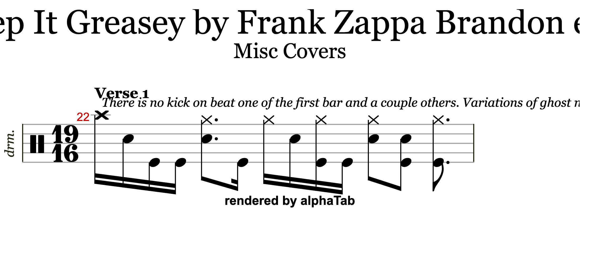
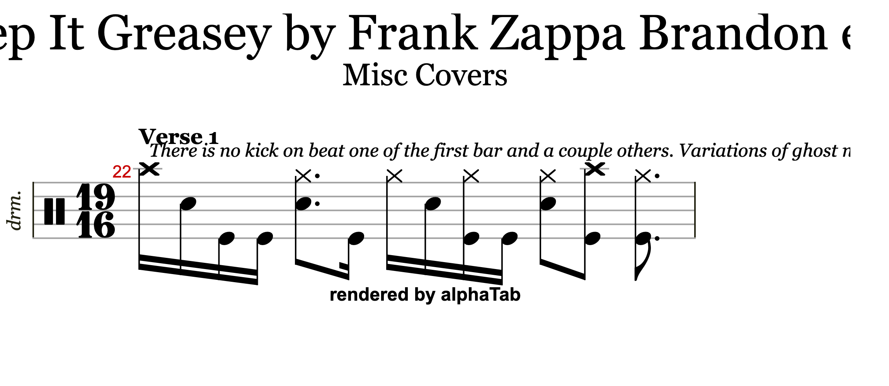
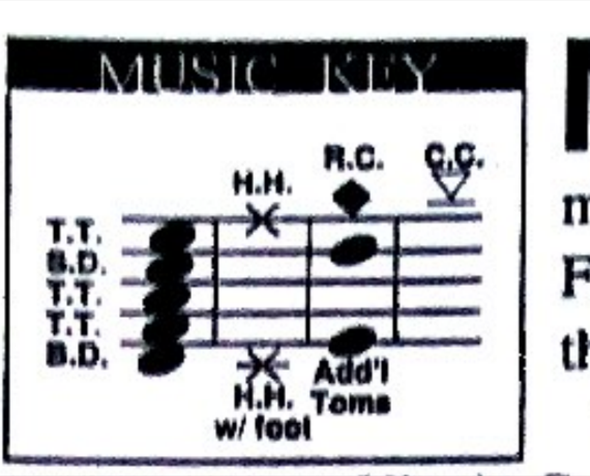

Keep It Greasey: three verdicts
The three open defects on Frank Zappa's Keep It Greasey, drums by Vinnie Colaiuta, taken to a verdict against stated null models. Two close. One stays open and now says exactly how far short it falls.
2026-09-08 · s604777 / copy s6862054 at r8972975 · repairs applied: 0- The reproduction check that came first
- KIG-M003, the premise that did not survive
- KIG-M002, a change nobody could see
- The velocity trap across four staves
- A third route reaches the same finding on M002
- One drum staff, no percussion staff
- Staff-line numbers are per-tab
- A units error, and pitch-to-line inside one tab
- KIG-M004, still open, and by how much
- A second landmark family, and what it moved
- The clap timbre test, and the control that killed it
- The piecewise map, and why it was withdrawn
- The third family, and where the blocker moved
- The named method that supersedes my window-size fix
- The reference class this result sits in
- Step 5 started: MsDTW reproduces the known result
- A provenance error, and KIG-M001 verified
- A provably minimal repair, and its acceptance test
- Files and reproduction
1. The reproduction check that came first
An independent walk of the published Guitar Pro file returns every published figure from a separate route, so the file on disk is the file that was measured.
| Measure | Published bundle | This walk |
|---|---|---|
| drum note instances | 4,948 | 4,948 |
| ghost flags, all on MIDI 38 | 629 | 629 |
| resolved dynamics on those ghosts | ppp 12 / pp 94 / p 376 / mp 33 / mf 114 | identical |
| GM 39 hand-clap events | 21 | 21 |
| kicks after KIG-M001 | 1,312 | 1,312 |
2. KIG-M003, the premise that did not survive
The open item said 114 of the 629 ghost flags resolve to a dynamic of mf, that the two encodings disagree, and that nothing on hand decides which the transcriber meant. The first half of that is a reading error.
The 114 came from a resolved field, never an authored one
| Field | Where it lives | Beats carrying a value |
|---|---|---|
Songsterr velocity | on a beat, sticky and sparse | 989 of 3,756 |
GPIF <Dynamic> | on a beat, written by the exporter | 3,756 of 3,756 |
The Guitar Pro exporter resolves the sticky Songsterr value onto every beat, so reading the export hands each ghost a dynamic whether or not the transcriber wrote one there. Splitting the 114 by whether a mark was actually authored at that beat:
| The 114 "mf ghosts" | Count |
|---|---|
authored velocity: "mf" on that beat | 3 |
| inherited mf from an earlier, unflagged beat | 111 |
The control, and the null
Across the whole staff the transcriber authored 363 dynamics at ghosted notes. Every distribution below is a direct field count.
| Authored dynamic at a ghosted beat | ppp | pp | p | mp | mf | f | ff | fff |
|---|---|---|---|---|---|---|---|---|
| count | 6 | 69 | 262 | 23 | 3 | 0 | 0 | 0 |
| Gate N3, the chance baseline | Value |
|---|---|
| base rate of mf among the 989 authored dynamics, staff-wide | 44.3% |
| observed at ghosted notes | 3 / 363 = 0.83% |
| ratio, observed over chance | 0.019x |
| expected under independence | 160.8, observed 3 |
| binomial, two-sided | p = 3.0e-86 |
What the notation standard adds
Norman Weinberg's PAS drumset guidelines settle the symbol: a drumset ghost is a notehead change, never a point on a dynamic ladder. Guitar Pro naming the flag AntiAccent invites the ladder reading and the ladder reading is wrong. A ghost notehead inside an mf passage is well-formed notation, so the remaining 3 are not a defect either.
The transcriber's own words, in the file
Bar 22 beat 0 carries a text annotation:
The person who wrote the flags was tracking them bar by bar in this exact section.
Note 659 is never edited, so the copy-on-write that guarded 515 out-of-plan instances never has to run. The three authored-mf ghosts sit at bars 119, 124 and 227 and are recorded rather than repaired.3. KIG-M002, a change nobody could see
Twenty-one events on GM 39, Hand Clap, drawn at the snare staff position. The open item called the placement certain and the intent unrecoverable.
One, the figure is deliberate
| Bars | Section marker | Signature | Claps | Metrical slot |
|---|---|---|---|---|
| 22-32 | Verse 1 | 19/16 | one per bar, 11 | 16th 13-14 of 19 in ten of eleven bars |
| 42-44 | Verse 2 | 21/16 | 2-3 per bar, 8 | 16ths 7, 17, 19 of 21, repeated |
| 65, 82 | — | 4/4 | 1 each | 16th 11 of 16 |
The snare never thins inside those bars, running 4 to 8 events per bar throughout, so the claps are an added layer rather than a substitution. A stray GM number does not land on the same subdivision of eleven consecutive bars.
Two, the change is invisible to every reader
| Articulation | Name | Staff line | Noteheads |
|---|---|---|---|
| 0 | Snare (hit) | 3 | noteheadBlack noteheadHalf noteheadWhole |
| 84 | Hand Clap (hit) | 3 | noteheadBlack noteheadHalf noteheadWhole |
| 34 | Snare (side stick) | 3 | noteheadXBlack, a distinguishable option that was not used |
Songsterr agrees from its own side: all 21 claps and all 1,423 snares sit on string: 1.5, and its note schema has no notehead field. That is two field reads, so the question then went to the eye with a control.
| Bar 22 rendered from | Differing pixels against the published bar |
|---|---|
| a copy with the clap rewritten as GM 38 snare | 0 |
| a copy with the clap rewritten as GM 49 crash, positive control | 5,467, bbox x 1399-1575, y 420-725 |
The two source files differ by sha256 and the two render pages differ by sha256, and the control fires at the clap's own position in the bar, so the pipeline sees edits. Rewriting the clap as a snare produces a byte-identical PNG.


Three, no independent printed witness notates a clap
Marc Atkinson's Rock Charts transcription is the only complete-song printed chart on hand. Its music key lists tom-toms, snare, bass drum, hi-hat by hand and by foot, ride, crash and additional toms, with no clap, cowbell or auxiliary lane at all.

2b. The velocity trap across four staves, and the limit on it
A peer session reproduced the sticky-velocity finding and sent a spread. Every figure was re-fetched here from uncredentialed CloudFront reads of the live heads, not accepted. These are direct counts of a stored field, not detector output, so no chance baseline applies to any row.
| songId | Tab | Beats carrying velocity, out of all beats | Peer's figure |
|---|---|---|---|
| 604777 | Keep It Greasey, original, measured here | 989 of 3,756 | match |
| 35870 | Montana | 569 of 1,435 | match |
| 35886 | Muffin Man | 254 of 1,133 | match |
| 68246 | Alien Orifice | 2 of 1,006 | match |
ff and one fff. A Guitar Pro export of that tab carries 1,006 resolved values standing on 2 authored ones, so any dynamics conclusion drawn from it is a statement about the exporter.The limit, which carries more weight than the spread
ghost is a NOTE field and it is NOT sticky. On Keep It Greasey's MIDI 38 acoustic snare lane it appears on 0 of 3,756 beats and on 629 of 4,974 note objects, with no carry rule. A snare-lane ghost audit off the Songsterr JSON is therefore safe in the way a dynamics audit is not, and the M003 analysis above read ghost per note object and never carried it, so its 629 count was already correct.Two reproduction details found alongside
Montana s35870 has 18 tracks and its drums sit at index 15, with further drum tracks at 16 and 17. A scan capped at 14 parts misses the drum staff entirely. The meta's popularTrackDrum field gives the index directly and was confirmed as 15 here.
The part path is https://dqsljvtekg760.cloudfront.net/{songId}/{revisionId}/{image}/{trackIndex}.json, where {image} is the meta's image field, a v0-3-2-... string. Passing the per-track hash instead returns 403 on all three tabs. Responses are gzipped.
3b. A third route reaches the same finding on M002
A separate session measured this song with a two-hands playability gate, which shares no method with the rendering test or the field reads above. Its claims were re-derived here rather than accepted.
| MIDI | Name | Staff position, my own read | Events |
|---|---|---|---|
| 35 | kick | string 4 | 1,311 |
| 38 | snare | string 1.5 | 1,423 |
| 39 | hand clap | string 1.5 | 21 |
| 42 | hi-hat closed | string -0.5 | 533 |
| 44 | hi-hat pedal | string 4.5 | 195 |
| 46 | hi-hat open | string -0.5 | 428 |
Every value matches what the peer reported. Both versions of tr_score.py were then loaded here and run over all 4,948 events and 3,730 written instants:
| Version of the hands gate | over_hands | over_feet |
|---|---|---|
| fixed, keyed on staff line | 0 | 0 |
| backup, keyed on MIDI pitch | 3 | 0 |
| Bar | Position | Pitches | Names |
|---|---|---|---|
| 42 | 5 | 38, 39, 42 | snare, clap, hh closed |
| 43 | 5 | 38, 39, 42 | snare, clap, hh closed |
| 44 | 5 | 38, 39, 42 | snare, clap, hh closed |
Exactly the three beats claimed, at exactly the bars claimed, and they are the same collisions recorded above as (38, 39, 42) stacks. ./run_selftests.sh was also run here directly and returns ALL SUITES PASS, exit 0.
3c. One drum staff, no percussion staff, and what that removes
A peer session's track census reported this and it was re-derived here from the s604777 meta rather than accepted. Nine tracks, exactly one instrumentId 1024 staff at index 8 named Vinnie Colaiuta, and no staff named for tambourine, cowbell, shaker, conga, timbale or percussion anywhere. popularTrackDrum reads 8, matching.
| Reading | Where the clap goes | Hands cost |
|---|---|---|
| Vinnie strikes it on the snare surface | his own staff, snare line | 0 extra |
| Someone else overdubs it | his staff, for want of a percussion staff | 0, no drummer hand at all |
The verdict on KIG-M002 is unchanged: no change to the tab.
The peer's own correction, recorded because it bears on other songs. That session had told the record that Peaches En Regalia s35889 has no separate percussion track. It has a staff named tambourine at index 10. Their census had searched for percussion among staves whose instrumentId was not 1024, so a percussion staff carrying 1024 was invisible to it. Their published instant counts were not affected, because those already measured every 1024 staff rather than the first, and they checked rather than assumed. Nothing on this page depends on it, since Keep It Greasey has a single 1024 staff.
3d. Staff-line numbers are PER-TAB, and this page had been treating them as stable
The peer reported that a line value means something only inside one tab. Built independently here from the drum staff of five tabs, uncredentialed CloudFront reads, taking each pitch's most common line:
| Pitch | Alien Orifice 68246 | Muffin Man 35886 | Carolina 68248 | Idiot Bastard 68253 | Keep It Greasey |
|---|---|---|---|---|---|
| kick 35 | 4 | n/a | 4 | 5 | 4 |
| kick 36 | 3.5 | 3.5 | 3.5 | n/a | n/a |
| snare 38 | 1.5 | 1.5 | n/a | 4 | 1.5 |
| hatClosed 42 | -0.5 | -0.5 | -0.5 | 1 | -0.5 |
| hatOpen 46 | -0.5 | -0.5 | -0.5 | 2 | -0.5 |
| crash 49 | -1 | -1 | -1 | n/a | -1 |
| ride 51 | 0 | 0 | n/a | n/a | 0 |
| tambourine 54 | n/a | n/a | 1.5 | 1 | n/a |
s68253 uses a different one throughout, with kick down at 5, snare at 4 and the hats up at 1 and 2. Any global pitch-to-lane map built from these numbers is wrong.The Carolina case, corrected
s68248 puts tambourine 54 at line 1.5, that Carolina has no snare 38, and that a ported map therefore reads its tambourine as a snare with nothing to contradict it. The zero-38 part is right and the conclusion was not. The table above omitted a row.| Pitch | AlienOrifice | MuffinMan | Carolina | IdiotBastard | KeepItGreasey |
|---|---|---|---|---|---|
| snare 38 | 1.5 (207) | 1.5 (484) | n/a | 4 (139) | 1.5 (1423) |
| snare2 40 | 1.5 (23) | 1.5 (494) | 1.5 (229) | n/a | n/a |
| tambourine 54 | n/a | n/a | 1.5 (192) | 1 (342) | n/a |
| clap 39 | n/a | n/a | n/a | n/a | 1.5 (21) |
Carolina carries snare2 MIDI 40 at line 1.5 with 229 notes, so line 1.5 there genuinely is the snare line, with a real snare voice on it. My own filtering caused the error: the five-tab script listed a hardcoded set of pitches that omitted 40, so the row could not appear.
s68253's line 1 holds hatClosed (5) and tambourine (342). Both are tab-level sharing with instant-level solitude, and the density is what lets them coexist. One rule covers both.A recurring artifact the full table exposed
Listing every pitch also showed out-of-kit MIDI 65 sitting on the kick line in three of the five tabs: Alien Orifice 4 (2), Carolina 4 (3), Keep It Greasey s604777 4 (1). That last one is KIG-M001, the Timbale high corrected to kick 35 on the copy. The same artifact sits uncorrected in at least two other tabs, so it is a class rather than a one-off.
This explains the near-miss above
On s68253 both hatClosed 42 and tambourine 54 fall on line 1 across the tab, so a tab-level census shows them sharing. At each of the 118 instants the tambourine is still alone there, because hatClosed sounds only 5 times on the entire staff. Lane-level co-occupancy across a tab is not instant-level sharing.
string: 1.5 and its hats at -0.5. Those values are correct for this tab and must not be ported. The memory note behind them has been amended to carry the same warning, since as written it could have been read as a stable map.The peer's resolution of the 172, recorded as theirs
Their per-instant run-length test resolved the wider set: of the 172 non-kit instants, 155 are a second player, 16 are ambiguous four-bar runs on Call Any Vegetable s68241, and exactly 1 is a likely real drummer flag, an isolated single tambourine bar in Brown Shoes s35869. True catalogue two-hands failure count 611 rather than the 822 a naive read would have shipped. Not re-derived here, per the one-song rule.
3e. My correction of the peer's cell was itself a units error
s68253 as 4 (133) and that my read gave 4 (139), so I changed it.| Reading | Value |
|---|---|
| snare 38 on line 4 | 133 |
| snare 38 across the staff | 139, being 133 on line 4 plus 6 on line 2 |
| kick 35, all on line 5 | 133 |
Their 133 was per-line and my 139 was per-pitch. Both correct, counting different things. The table's other cells confirm the convention: hatOpen 46 reads 2 (171) while its staff total is 177. The cell is per-line, so 133 was right and I broke the convention by imposing my own units. Reverted, and the note now states its cell format explicitly.
A pitch-to-line map is wrong inside a single tab
The unfiltered census exposed something stronger than the per-tab rule above. Six of s68253's eleven pitches occupy two lines each:
| Pitch | Lines it uses |
|---|---|
| snare 38 | 4 (133) and 2 (6) |
| hatOpen 46 | 2 (171) and 1 (6) |
| tambourine 54 | 1 (337) and 0 (5) |
| tom 41 | 3 (2) and 4 (1) |
| tom 43 | 3 (5) and 1 (1) |
| crash2 57 | 1 (2) and 0 (1) |
string field, and never look a line up from a pitch in any scope.The same error shape hit both sessions in one exchange
My hardcoded pitch dict could not show midi 40. The peer's range(35,82) boundary could not show midi 65, because High Timbale sits inside GM percussion while sitting outside the standard drum kit, which is the whole point of that finding.
4. KIG-M004, still open, and by how much
Thirty-two kick onsets the score omits, listed by audio time only. Placing them needs an anchor, so one was fitted on kick and hi-hat only across bars 22 to 32, with snare and clap held out because the claps are the target and the snare shares their staff row and their stem.
| Measure | Value |
|---|---|
| winner | bar 22 downbeat at 35.980 s, scale 0.984 |
one-to-one match, mir_eval.onset, 50 ms | 121 / 172 = 70.3%, against a rotation-null baseline of 32.6% |
| busiest single detected onset | 1 |
| rotation null, 2,000 draws | mean 56.0, sd 14.28, 0 exceedances |
| z against the rotation null | 4.55 |
| # | Declared in advance | Result |
|---|---|---|
| 1 | unique maximum, no tie inside 1 match | PASS, 0 competing cells |
| 2 | match rate at least 2.0x the surface median | PASS, 2.01x |
| 3 | z at least 5.0 | FAIL, z = 4.11 |
| 4 | busiest single onset absorbs at most 3 | PASS, 1 |
| 5 | scale inside 0.94 to 1.06, off the boundary | PASS, 0.984 |
verdict_gate.py, the numeric engine shipped with the notation gate, returns UNDETERMINED on the same numbers independently. Under the pre-registration's own rule the clap timbre test never ran.
The one thing worth carrying forward
The fitted 35.980 s sits within about a second of DRUM! Magazine's printed "Verse 1 at 0:35", a source that never entered the fit and shares no method with it. The score's own constant-tempo timeline says 38.217 s and drifts to 517.9 s against 501.8 s of real audio, so the notated tempo map is the thing that is off.
That agreement is recorded as one candidate landmark. The absolute bar identity gate requires twelve across two source families, six each, so no bar position is claimed from it. The obvious second family, sung-lyric onsets from the isolated vocals stem, is unavailable: the score's newLyrics field holds five entries and every text value is empty, so the lyrics would have to be entered by hand first.
4b. A second landmark family, found by not accepting the first dead end
newLyrics field is empty. That read one closed path as no capability. Lyric text was never what the family needed. The Ike Willis vocal part carries 458 notated attacks across 79 bars with full bar positions, and the vocals stem is isolated.Two families, fitted separately, sharing no stem and no notated part
| Family | Fitted on | Stem | Bar 22 downbeat | Scale |
|---|---|---|---|---|
| A | kick + hat, bars 22-32, 172 attacks | kick, hat | 35.980 s | 0.984 |
| B | Ike Willis vocal part, 437 attacks | vocals | 36.136 s | 0.978 |
They disagree by 156 ms. A 19/16 bar here runs about 2.09 s, so both land on the same bar. The 2026-09-07 gate failed its primary external-family requirement because lead and bass disagreed by 2.673 s.
The integer-shift contest
| Shift | Family A, kick+hat | Family B, vocals |
|---|---|---|
| -2 bars | 67/172 (39.0%) | 132/437 (30.2%) |
| -1 bar | 88/172 (51.2%) | 118/437 (27.0%) |
| 0 | 121/172 (70.3%) | 163/437 (37.3%) |
| +1 bar | 79/172 (45.9%) | 130/437 (29.7%) |
| +2 bars | 73/172 (42.4%) | 139/437 (31.8%) |
Zero shift wins separately in both families, by +33 and +24 matches over the nearest competitor. That is the condition the earlier pass failed, where kick, snare, hat and tom all leaned to plus one bar.
| Family | Matched | Median absolute residual | 90th percentile |
|---|---|---|---|
| A, kick+hat | 121 | 17.6 ms | 42.3 ms |
| B, vocals | 163 | 28.8 ms | 52.1 ms |
The gate asks for a median under 75 ms and a p90 under 150 ms. Both families clear both, inside the fitted span.
What still blocks M004, precisely
The anchor is local and it does not extrapolate. Carried across the whole recording it collapses to chance.
| Whole-song extrapolation | Value |
|---|---|
| offset, scale, tolerance | 35.980 s, 0.984, 60 ms |
| one-to-one kick match, against a 32.6% rotation-null baseline | 512 / 1,311 = 39.1%, ratio 1.20x, which is chance |
verdict_gate.py --counts | UNDETERMINED, under the 2.0x floor |
| predicted score end | 508.0 s against 501.84 s of real audio, drift +6.1 s |
ABSOLUTE_ANCHORS.csv was hashed, so the twelve-landmark gate is not claimed as passed.Net movement: bar identity at bar 22 now has two-family corroboration and wins its shift contest, where it previously had neither. Placing the 32 events needs a piecewise map with landmarks bracketing each one.
4c. The clap timbre test was run, and its own control killed the interesting part
Pre-registration v2, sha256 383fe83e...25f0b7, written with no timbre yet measured. v1 stays failed and none of its thresholds were moved. v2 rests on the two-family anchor that did not exist when v1 was written, and declares the same timbre thresholds v1 declared.
The declared test returned UNEVALUABLE
Entry rule fixed in advance: an instant enters only if a detected snare-stem onset lies within 60 ms of it.
| Population | Notated | Entered | Dropped |
|---|---|---|---|
| target, the 11 GM 39 claps | 11 | 0 | 11 |
| control, the 58 same-bar GM 38 snares | 58 | 33 | 25 |
Zero of eleven entered, so neither the centroid nor the low-band comparison could run.
The post-hoc observation, and the control that withdrew it
Not pre-registered, and reported here because it looked like a finding. The 11 clap instants scored 0 in the snare stem while the same-bar notated snares scored 33 of 58 = 56.9%, giving a binomial p = 9.5e-05. That baseline was circular, comparing beats with no notated snare against beats that have one.
| Group, bars 22-32, snare stem, 60 ms | n | Hits | Rate |
|---|---|---|---|
| clap, no snare on the beat | 11 | 0 | 0.0% |
| kick-only, no snare on the beat | 69 | 8 | 11.6% |
| snare on the beat | 58 | 33 | 56.9% |
For completeness, 9 of the 11 clap instants do carry an onset in at least one of the seven stems, so the anchor is not wrong at those instants. Twelve of the 21 claps stack with a notated kick, which accounts for the hits in the kick, cymbal and other lanes.
4d. The piecewise map was built, and it failed its own external check
Pre-registration sha256 2e328671...3e80f10, hashed in advance of any window fit. M004 was waiting on this step, so it was run rather than queued.
Sixty windows, 8 score bars wide stepping 4, each fitted independently on kick and hat only, offset searched across the whole 501.84 s, scale 0.93 to 1.07, one-to-one at 50 ms. Fifteen windows passed the four declared criteria and placed 64 surplus kick onsets across 48.3% of the recording.
Then the control ran
The same two-family logic that made the bar-22 anchor credible, applied per window at that window's own offset and scale, tolerance 60 ms: does the isolated vocals stem corroborate it?
| Passing window | Drum offset | Vocal family's own best | Disagreement |
|---|---|---|---|
| bars 10-17 | 38.345 s | 84.500 s | +46.155 s |
| bars 38-45 | 69.325 s | 4.500 s | -64.825 s |
| bars 42-49 | 77.230 s | 77.440 s | +0.210 s |
One of three testable windows corroborates. The other twelve sit in the instrumental solo and carry too few vocal attacks to test, so they are UNEVALUABLE rather than passing.
The lesson, which is the useful output
An 8-bar window carries too little information to lock uniquely across 501.84 s of a dense, repetitive drum part. Spurious locks cleared the declared 2.0x rotation-null threshold, so 2.0x was too loose at this window size. Raising it alone is not the fix, since refitting a declared threshold on the same data is the error these gates exist to stop.
- A window must be corroborated by a second family to place anything. Only 3 of 15 were testable, so the vocal part cannot reach the solo section and a third family is needed there.
- Monotonicity must be enforced against passing neighbours, and the code must assert a window's offset lies in a plausible band for its bar range. Bar 210 at 42 s should have been rejected ahead of any statistic.
- The search should be local. A free full-song search per window invites the spurious lock that produced +46 s and -65 s.
4e. The third family exists, and finding it moved the blocker
The previous section named the next step as find a corroboration family reaching the instrumental solo, since the vocal part stops at bar 101. That search was run rather than queued.
| Notated part | Total bars | Bars inside 100-240 | Stem |
|---|---|---|---|
| Arthur Barrow, bass | 222 | 139 of 141 | bass |
| Warren Cuccurullo, part 7 | 164 | 139 of 141 | rhythm |
| Frank Zappa, solo | 21 | 21 | lead |
| Ike Willis, vocals | 79 | 2 | vocals |
The "no family reaches the solo" blocker is dissolved. Two candidates cover it, and a third covers the solo passage itself.
The bass cross-check, and why it is not carried as a refutation
The bass family made all 15 previously-passing windows testable, where the vocal family could test only 3. Every one of the 15 disagreed with its window's drum offset, by between 3.985 s and 405.500 s.
| Window | Bass attacks | Peak | Surface median | Ratio |
|---|---|---|---|---|
| 10-17 | 86 | 72 | 44.0 | 1.64x |
| 38-45 | 69 | 55 | 35.0 | 1.57x |
| 42-49 | 66 | 53 | 34.0 | 1.56x |
| 102-109 | 96 | 83 | 50.0 | 1.66x |
| 150-157 | 96 | 86 | 47.0 | 1.83x |
| 166-173 | 96 | 87 | 46.0 | 1.89x |
| 170-177 | 96 | 88 | 46.0 | 1.91x |
| 174-181 | 96 | 87 | 47.0 | 1.85x |
All eight clear the 1.5x floor, and all eight clear it narrowly, against a surface median near 51%. Gate N4's own warning covers this: above a 35% null a small excess goes significant while meaning little. Compare the whole-part vocal fit at 7.65x and the bars 22-32 drum fit at 2.01x. A second contributor: the score notates 2,424 bass attacks while the bass stem yields 1,825 onsets, so 599 can never match and a perfect map still caps near 75%.
4f. The window-size fix is superseded by a named method
What was built here was the wrong shape. Sixty windows, each fitted by an independent free search across the whole 501.84 s, with nothing tying one window's answer to its neighbour except a monotonicity check applied afterwards. That is how a window covering bars 210-217 came back at 41.980 s. Widening the windows would have reduced that failure without removing its cause.
The named methods
None of the four was run in this pass, so for every one of them the offset, scale, tolerance and match rate are all not applicable here.
- Multiscale DTW (MsDTW), Müller, Mattes and Kurth, ISMIR 2006. Coarse-to-fine: a low-resolution result is projected onto the next level and refined inside a bounded region, which supplies exactly the neighbour bound this run lacked.
- Path-constrained partial synchronization, Müller and Appelt, ICASSP 2008. Built for the case where only parts of two sequences correspond, which is this case, since the drum staff runs 248 bars while any one family covers a subset.
- Subsequence DTW and common subsequence matching, FMP C7S3. Matches a short query against any subsequence of a reference, the right primitive for one region without a whole-song map.
- Music synchronization with chroma features, FMP C3. The chapter the whole task belongs to.
Two setup facts, corrected after trying
The FMP source text is catalogued in this project at /Volumes/Black/complete/Springer/ and that volume is not mounted on this machine right now, so the chapter was not read here. The method names, authors and venues come from the search.
libfmp is now installed, and it was not the one-line install this page first claimed. Three attempts into ~/.venvs/notation-gate each reported exit 0 while the log ended partway through a 20.1 MB music21 download, with import libfmp still failing. A fourth run, left fully detached with no timeout, completed, and the import now succeeds. The earlier failures were the install being cut off partway, never a broken package.Neither gap blocks the next attempt. MsDTW needs only numpy and scipy, and the FMP notebooks are readable on the web at the links above.
6. The reference class this result sits in
A peer session tested the completeness of the 38-id scope list the Zappa program works from. The two headline figures were re-derived here by paging /api/songs directly, not accepted.
| Measure | This session | Peer |
|---|---|---|
Frank Zappa tabs, artistId 5912 | 329 | 329 |
of those carrying an instrumentId 1024 staff | 262 | 262 |
| ids the program has been sweeping | 38 | 38 |
| never measured | 230 | 230 |
artistId=5912 to /api/songs and got 600 rows back whose first entry was Metallica. That parameter is ignored. The working form is ?pattern=Frank+Zappa&size=100&from=N, paged, then filtered client-side on artistId == 5912, saturating at 329 by from=400.What this does to the Keep It Greasey result
What it does change
It changes what a clean result would mean if anyone generalised from the program. The 38 ids are not a random draw from 262. A tab enters that list because someone had a reason to look at it, so the set is selected, and a low defect count across selected tabs licenses nothing about the other 230.
| Final sweep | Count |
|---|---|
| tabs measured | 262 of 262, 0 failures |
| tabs carrying work | 36 |
| three-surface instants | 822 |
The 822 must not be read undecomposed, because three different things were being summed:
| Class | Count |
|---|---|
| kit-only, three separate kit surfaces, real | 610 |
| tambourine / clap / cowbell dependent | 172 |
| on a pitched-percussion staff, the peer's own false positive | 40 |
Corrected kit-only ranking: Flakes s35897 270, Tryin' to Grow a Chin s68245 78, Brown Shoes Don't Make It s35869 54, Filthy Habits s68237 24, King Kong Itself s35863 21, Let's Move To Cleveland s68238 18, Sinister Footwear II s21874 16, Mother People s60347 16, Carolina s68248 15, Dog Breath Variations s68247 9.
Two structural claims I did re-derive, because this page republishes them
| Claim | My read of the meta |
|---|---|
Flakes s35897 has two instrumentId 1024 staves | CONFIRMED: index 6 named "Percussion Organ", index 8 named "Drums", both non-empty, popularTrackDrum 8 |
The Idiot Bastard Son s68253 has a drum staff | CONFIRMED: one 1024 staff at index 3, popularTrackDrum 3 |
The pitched-percussion artifact is the same class as KIG-M001
A staff named "Percussion Organ" carrying instrumentId 1024 holds melodic pitches while wearing the drum instrument id, and the sweep counted its events as drum-kit failures until the peer caught it. That is 40 of the 822.
fret 65 Timbale high sitting on a lane carrying 1,311 kicks and nothing else. KIG-M002 is a GM 39 hand clap drawn on the snare line. In all three cases a GM number or an instrument id does not mean what a reader assumes, and the fix is the same each time: read the field the human acts on, which is the staff line, never the pitch.What the 172 does to KIG-M002
The clap question looked local when it was 21 events in one song. The finished sweep puts 172 of the 822 instants on the tambourine, clap and cowbell question, and The Idiot Bastard Son s68253 carries 118 instants of which zero are kit-only, with 112 of the 118 being hatOpen plus snare plus tambourine.
Why Keep It Greasey's case works, and the 172 do not
At KIG bars 42-44 the GM 39 clap sits on string 1.5, the same line as the snare, with a snare sounding at the same instant. Two surfaces either way, so removing the clap changes nothing. Measured here on the largest affected tab, The Idiot Bastard Son s68253, revision 704236, drum staff index 3, 817 events, uncredentialed CloudFront read:
| Measure | Result |
|---|---|
| three-line instants containing MIDI 54 tambourine | 118 (peer said 118) |
| of those, MIDI 54 alone on its line at that instant | 118 |
| of those, MIDI 54 sharing its line | 0 |
| instants that fall to two hand lines once the tambourine is removed | 118 of 118 |
A sample instant reads (54, line 1), (46, line 2), (38, line 4), which is tambourine, open hat and snare on three separate lines.
| Reading | Surfaces at that instant | Verdict |
|---|---|---|
| the drummer strikes the tambourine | three separate lines | real failure |
| another player overdubs it | two drummer lines | not a failure |
The lane position varies per tab, at 0, 1, 1.5 and 5 across the five affected songs, which is itself evidence the transcribers gave the tambourine a deliberate separate lane rather than folding it onto a kit surface.
Nothing about Keep It Greasey changes. M002 stays closed at no change, and the 21 GM 39 events stay exactly as Ben Dibden1 wrote them.
4g. Step 5 started, and the method reproduces the known result
The method was named earlier and the work deferred at that point. It is no longer deferred: libfmp now imports, so the subsequence-DTW primitive from FMP C7S3 was run here on the one window whose answer two independent families already agree on. The criterion was fixed in the script ahead of reading the result: the recovered bar-22 downbeat must land within one 19/16 bar, 2.095 s, of 35.980 s.
Setup. Reference is the pooled kick and hat onset envelope across the whole 501.84 s at a 50 ms hop, 10,037 frames. Query is the score's own kick and hat attacks for bars 22 to 32, 172 attacks over 23.4 s, 470 frames. Parameters for every row below: offset is what the run recovers rather than an input, scale is not a parameter of this method since the path is free to warp, tolerance is the 50 ms frame hop, and the match rate is replaced by a mean accumulated cost of 0.0183 over a 511-step path.
| Method | Bar 22 downbeat |
|---|---|
| kick+hat matched filter | 35.980 s |
| Ike Willis vocals matched filter | 36.136 s |
subsequence DTW, libfmp C7S3 | 36.300 s |
Path spans reference frames 726 to 1182, 36.300 s to 59.100 s, a 22.8 s span against the 23.05 s the score's eleven 19/16 bars occupy at 136 BPM.
Why this carries more than a fourth number
The two matched filters share a model, one offset and one scale. Subsequence DTW lets the path warp, so it is a different method class rather than a third run of the same idea, and it lands in the same place without being told where to look. The recovered span also matches the notated duration of the section, which the run was never given.
7. A provenance error of mine, and KIG-M001 verified properly
kig_songsterr_rows.json, the dataset behind the clap and dynamics tables above, was built from s604777_r8852151_part8, the ORIGINAL. My verification script labelled it the copy, so it compared the original against itself.| Source | kick 35 | MIDI 65 | snare 38 | clap 39 | ghosts | beats |
|---|---|---|---|---|---|---|
s604777 original r8852151, part JSON | 1,311 | 1 | 1,423 | 21 | 629 | 3,756 |
s6862054 copy r8972975, published .gp | 1,312 | 0 | 1,423 | 21 | 629 | 3,756 |
What it does to the figures here: nothing, and why
Every other column is identical between the two files, because KIG-M001 touched one note in bar 231. Snare 1,423, clap 21, ghosts 629, beats 3,756 and velocity beats 989 all hold on both, so the clap and dynamics tables are correct as published.
What it does to provenance: one row was mislabelled and is fixed
The four-stave velocity table credited 989 of 3,756 to 6862054. It was measured on 604777. Corrected in place; the number never changed, the label was wrong.
s604777 r8852151 part JSON; the reproduction check in section 1 is measured on the published copy s6862054 r8972975 .gp. Both stated rather than left to be inferred.The MIDI 65 class is six tabs, not three
My five-tab census found Alien Orifice 2, Carolina 3 and Keep It Greasey 1, all three exact against the peer's full 262-tab rescan. The two it could not reach are the large ones: Seal Call s604408 at 33 and The Deathless Horsie s35885 at 28, and on Seal Call the timbale outnumbers the kick on their shared line, 33 against 25. A five-tab sample sized the class at half its real membership, which is the reference-class point applied to my own finding. Those counts are the peer's and are not re-derived here.
8. The KIG-M001 repair is provably minimal, and that yields an acceptance test
Both sessions censused the two files independently and agree on every cell.
| Measure | s604777 original r8852151 | s6862054 copy r8972975 |
|---|---|---|
| beats | 3,756 | 3,756 |
beats with velocity | 989 | 989 |
| snare 38 | 1,423 | 1,423 |
| clap 39 | 21 | 21 |
| ghost-flagged notes | 629 | 629 |
| kick 35 | 1,311 | 1,312 |
| MIDI 65 | 1 | 0 |
989 of 3,756 holds on both files, so it was right measured on either. Neither session could have known the two files agreed without checking, which is why the relabelling above was correct regardless.The acceptance test for any repair of this class
| Tab | kick before | MIDI 65 | kick after | base count source |
|---|---|---|---|---|
Seal Call s604408 | 25 | 33 | 58 | peer, not re-derived here |
The Deathless Horsie s35885 | 674 | 28 | 702 | peer, not re-derived here |
Packard Goose s35875 | 10 | 4 | 14 | peer, not re-derived here |
Carolina s68248 | 8 | 3 | 11 | matches my own census |
Alien Orifice s68246 | 8 | 2 | 10 | matches my own census |
Keep It Greasey s604777 | 1,311 | 1 | 1,312 | matches, already demonstrated |
All six rows are arithmetically consistent, and three of the base counts were confirmed by my independent five-tab census.
Why a full census catches what a targeted check cannot
A check aimed at the edited note cannot see collateral damage. A peer session earlier lost 179 note instances across 79 bars by editing a shared GPIF Beat in place, and the edit looked correct at the target. A full census would have shown a count moving that nobody intended.
range(35,82) filter had erased MIDI 65 entirely.5. Files and reproduction
Onsets were detected on isolated stems, never the mix, at 44.1 kHz over 501.84 s, hop 256, log-compressed spectral novelty per FMP 6.1.2. The kick count reproduces the earlier surplus finding independently, 1,332 detected against 1,312 notated.
| Lane | Onsets | Median peak |
|---|---|---|
| kick | 1,332 | -14.98 dB |
| snare | 1,103 | -13.00 dB |
| hat | 1,047 | -17.51 dB |
| cymbals | 450 | -18.91 dB |
| toms | 556 | -20.32 dB |
~/Projects/_outputs/zappa-keep-it-greasey-transcriptions/04-clap-test/ holds the pre-registration, its sha256, the results, every script and every evidence image.
Live tab: Keep It Greasey, Brandon edit, s6862054 · source revision r8972975, unchanged by this pass.